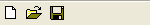

CreateToolBar()
语法
Result = CreateToolBar(#ToolBar, WindowID)概要
Creates a new empty toolbar on the given window.
参数
#ToolBar A number to identify the new toolbar. #PB_Any can be used to auto-generate this number. WindowID The window for the new toolbar. It can be obtained using the WindowID() function.
返回值
Returns nonzero if the toolbar was created successfully and zero if not. If #PB_Any was used for the #ToolBar parameter then the generated number is returned on success.
备注
This toolbar become the default toolbar for creation and it's possible to use ToolBarStandardButton(), ToolBarImageButton() and ToolBarSeparator() to add some items to this toolbar.
The events are handled the same way than menu events, using the function EventMenu(). ToolBars are often used as shortcut for menu items, so when assigning the same menu item number to a toolbar button, both events are handled using the same code.
示例
If OpenWindow(0, 0, 0, 150, 25, "ToolBar", #PB_Window_SystemMenu | #PB_Window_ScreenCentered) If CreateToolBar(0, WindowID(0)) ToolBarStandardButton(0, #PB_ToolBarIcon_New) ToolBarStandardButton(1, #PB_ToolBarIcon_Open) ToolBarStandardButton(2, #PB_ToolBarIcon_Save) EndIf Repeat Event = WaitWindowEvent() If Event = #PB_Event_Menu Debug "ToolBar ID: "+Str(EventMenu()) EndIf Until Event = #PB_Event_CloseWindow EndIf

参阅
ToolBarStandardButton(), ToolBarImageButton(), ToolBarSeparator(), FreeToolBar()
已支持操作系统
所有